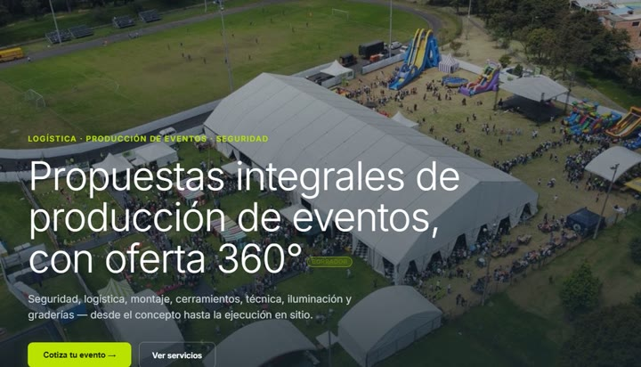

Video 1
Salida de la bodega
Próximamente
Propuesta para Open Group BTL · Bogotá
Cada equipo, cada tramo, cada responsable, verificable en tiempo real.
La propuesta en 4 minutos
El problema
Nadie puede decir en qué tramo se perdió el material, ni quién lo tenía.
4 de 10, sin rastro.
Entienda cómo lo solucionamos
Video 1
Video 2
Video 3
Los planes
Cada plan incluye todo lo del anterior; toque uno para ver qué trae y cómo se paga.
Los precios pueden ajustarse en la Fase 0, según el inventario, tramos y responsables reales.
Hoy alguien revisa a mano si hay material para el próximo evento, y se entera de un problema días después. El Plan 3 hace las dos cosas solo: avisa si alcanza apenas se programa, y señala lo raro antes de que alguien tenga que ir a buscarlo.
En el video completo: capítulos 2, 7 y 8.
El Plan 2 cierra el hueco del caso de los 10 pares: el material queda cubierto de evento en evento y ustedes se enteran al momento, sin llamar a nadie.
En el video completo: capítulos 5 y 6.
Exactamente lo que pidieron: manifiestos por QR desde el celular que ya tiene el personal, y un panel para consultarlos.
En el video completo: capítulos 1, 3 y 4, y la cadena de auditoría del capítulo 8.
Incluido en el Plan 3
Con el Plan 3 viene incluida la mejora de su página web. Haga clic en la imagen para verla.

PreviewPortada real de hoy · textos y datos por confirmar con OpenUn detalle que no estaba pedido: en redes sociales, buena parte de los comentarios eran de gente que quería trabajar con Open. Por eso la landing ya trae un botón «Trabaja con nosotros» donde pueden dejar su hoja de vida — sin que ustedes tengan que salir a buscarla.
Después de firmar
Nada se estima ni se inventa: se levanta con ustedes en la bodega, en cualquiera de los tres planes.
Antes de la reunión
Soporte y corrección de errores incluidos en los tres planes. Desde el Plan 2, respuesta remota en menos de 24 horas según la severidad, sin depender de una visita presencial; en el Plan 3, con prioridad.
Lo que ve en los videos corre de verdad y lo pueden probar antes de firmar.
Rentman o Goodshuffle resuelven reservas de un almacén de alquiler. Lo que le cuesta plata a Open es no saber quién tuvo el material y en qué tramo se perdió; por eso el traslado directo de un evento a otro está en el diseño desde el principio.
La implementación cuesta menos que la referencia de las agencias porque parte de un método ya construido y probado, adaptado a Open.
Para quien quiera verlo todo
Hecho por JLAutomatization